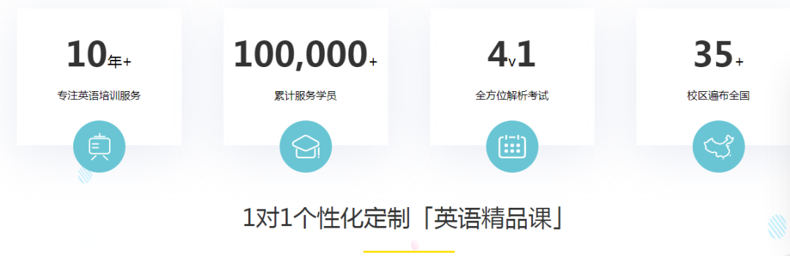
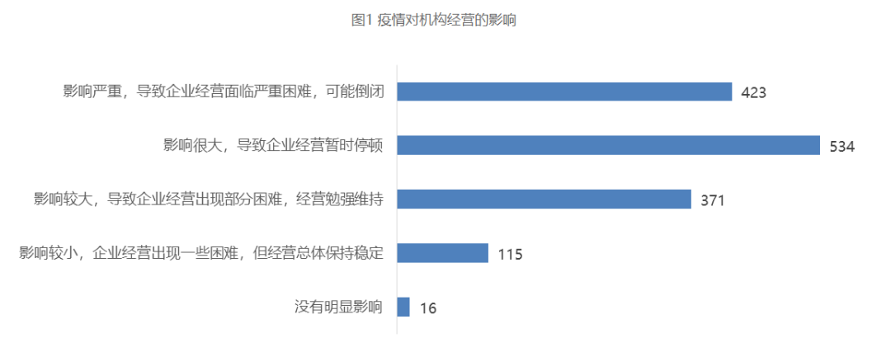
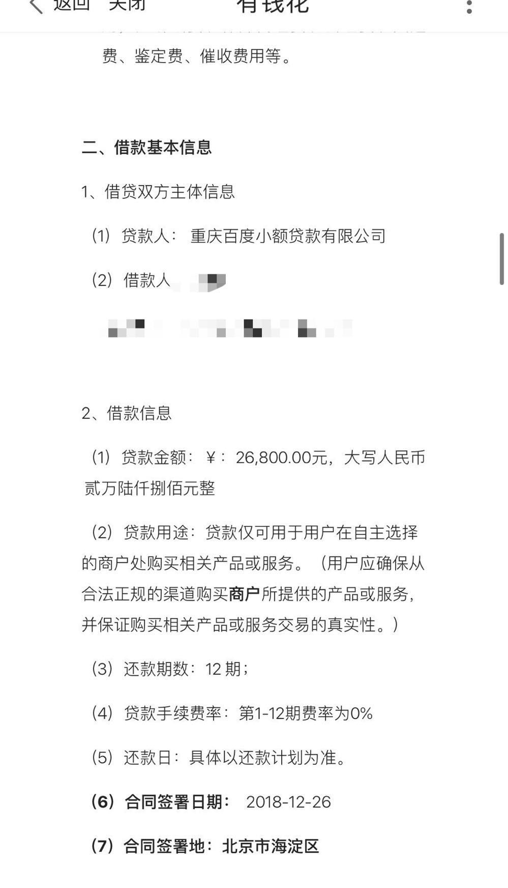

线下教育按下“暂停键”
原文链接 备份链接 《创新经济战疫指南》，是燃财经在新型肺炎疫情期间推出的特别栏目，关注创新经济企业遇到的新难题、商讨应该采取的新对策，希望能够帮助中小企业一起战胜挑战、把握机会。本文是第4期。查看前3篇请点击《哪些行业正在逆势爆 …

2月16日，百弗英语向学生们发出了教师团队解散的消息。“由于一、二月份疫情对公司的打击非常大，我们资金链出了问题，无法再上课了。”
文 | 敖瑾 实习生 丁宁 编辑 | 盛倩玉
新冠肺炎疫情影响下的教培机构，“线上”“线下”境况“冰火两重天”。
线上教培的网络授课平台，此时被大批在家上课的学生们“挤到宕机”；但线下教育机构此时却是乏人问津，复课遥遥无期又错失招生旺季、遭遇学生退费，而陷入了资金链断裂的危险。
百弗英语：教师团队解散
“2月15日前主动离职，可以获得一月工资的70%；选择不离职的，工资会一直保留到公司有足够资金，或是破产清算时再继续发放。”
李明任职的线下教培机构，在2月初给所有员工发出了这样一则通知。
这家名为“百弗英语”的教育机构，主要线下教授雅思、托福、四六级、成人英语口语等课程，成立时间已经超过10年，号称“在全国5大省市布局有35个培训校区，累计服务学员超过10万人”。

但疫情突如其来，让这些“数字”就此定格。
2月16日，百弗向学生发出了教师团队解散的消息。“由于一、二月份疫情对公司的打击非常大，我们资金链出了问题，无法再上课了。”
一名曾有多年教育机构运营经验的业内人士向南都周刊记者介绍，春季本是校外教育机构的招生旺季，但受疫情影响，教育机构失去了春季招生机会，下一个招生旺季要等到秋季。也就是说，线下教育机构将面临着一整个上半年都没有生源的窘境。
开源无望，而投资方的撤资，对百弗英语这样的线下教育机构而言，打击更如同雪上加霜。
据百弗英语内部知情人士透露，疫情爆发前，公司本来有投资方，但线下机构受疫情影响被迫关停的状况，让投资方做出了撤资决定。
百弗英语成都校区一名负责人直言，自己从未想过，线下教育机构会遇到像现在这样巨大的挑战。“线下教育机构复课遥遥无期，越坚持、越迷茫。”
超九成校外培训机构经营困难
“百弗英语的授课方式基本全部都是线下面授，很少有线上课程，属于‘一条腿走路’。”百弗英语一位校区负责人在复盘百弗英语倒闭时，这样总结了公司的业务形态。
线下培训全面叫停的情况下，像百弗这样“一条腿走路”、只有线下授课形式的教育机构，处境显得十分被动。
2月20日，中国民办教育协会培训教育专业委员会在线调研了全国31个省市的校外培训机构，调查结果显示，超过90%的教育机构表示，目前经营存在部分困难或严重困难。
疫情期间培训机构面临各种困难中，排在前三位的依次为：营收减少、场地租金压力和人力成本过高。不同类型机构所面临的困难排位略有差异。

疫情对经营机构的影响（图片来源：中国民办教育协会培训教育专业委员会）
纯线下培训机构受“在疫情期间不能进行线下培训”影响，直接面临“场地租金压力”和“人力成本压力”；与此同时，“线下转线上的压力”也远远高于其他已经具备线上功能的培训机构。
营收方面，疫情影响下，有47%的校外培训机构预计2020年上半年的营收比上年同期将减少50%以上。不同模式的机构营收受影响状况不同，受冲击最大的仍是线下机构。具体来看，线下机构中有49.42%的机构预计收入同比减少50%以上，只有0.8%左右预计与去年相比持平或者增加。

预计疫情对机构上半年营收影响（图片来源：中国民办教育协会培训教育专业委员会）
张兰是深圳一家中小型线下课外培训机构员工，她向记者透露，疫情期间，她所在的教育机构面临学生续费意愿低和招生难的问题。但与此同时，机构在南山和福田的两个店面，每月仍产生租金等费用近50万元，员工每人每月上万元的底薪加五险一金等人力成本，让机构不堪重负。
一方面是营收下降，另一方面是各种运营成本并未相应降低，许多机构都面临账上资金不足问题。79%的受访机构表示，账上资金仅能维持3个月以内，8%的机构只能支持半个月以内，13%的机构能够支持3-6个月，只有7%的机构能够支持6个月以上。
一线下课外培训机构运营表示，要保障资金链安全，一般要预留6个月的运营资金，但现实情况是，教育机构一般账面上能支撑3个月左右，就已经算比较理想的状态。“如果是单店运营的话，（预留3个月左右的运营资金）倒是没什么大问题。一旦开了连锁店，那点资金根本不够。”
压力之下，线下培训机构不得不采取措施进行自救。根据调查结果，线下机构应对资金短缺策略的前三大手段分别是：贷款、现有股东提供资金、减员降薪。
张兰任职的机构2月中旬向全体员工发布了疫情期间工资发放调整的通知。通知中，公司承诺不会因疫情的原因而进行裁员和减薪，但为保障现金流，公司目前每月只给员工发放50%的应发工资，剩下50%部分暂缓至暑假正常开课。方案暂定实行四个月。
学生：课没办法上了还要还贷
现实中，还有更多线下培训机构并未能熬过这个冬天。破产倒闭的多米诺骨牌，最终传导到了学生身上。
刘星在百弗试听过英语课后，在机构老师的强烈推荐下，花费6万元，报了最贵的“一对一”课程。但现在，刘星这6万块钱很大几率是“打了水漂”。
他在微信群里看到了一名任课老师发的消息，“课没办法上了，不清楚能不能退钱，因为我也已经是一个失业的离职员工。”
百弗英语学员与老师的沟通（图片由受访者提供）
在学员的反复追问下，百弗英语给出了一个处理方案：百弗目前无法上课也不能退钱，但可以转到另一家“牛学教育”，以多人小班的方式继续上课。
但这一方案并未能让学员满意。还有两年课程未完成的王飞认为，机构“出此下策”，对学员并不负责，“如果同意签转，我们以后既不能找百弗英语，也无法找牛学教育维权。”
百弗英语处理问题的态度也让王飞不满。“如果我不同意转课，机构就认定我是自动放弃剩余课程。这跟我们跟百弗签订的合同完全不符。”
多名学员提供的入学合同清晰显示，“未经乙方同意，甲方不得将乙方课程转让给其他机构或交由其他机构实施教学……甲方因自身原因要求解除本合同的，甲方须退还乙方剩余学费。”

学生与百弗英语签订的合同（图片由受访者提供）
现金预缴学费的学员面临退费难，而选择了贷款缴纳课程款的学员，则面临没课上还要继续还款的困境。
叶鑫目前已经停课近一个月，但还需在“百度有钱花”APP上为课程学费按月偿还贷款。据他介绍，自己报名时，被推荐使用指定平台贷款，百弗英语称这样可以减免学费2000元。如果叶鑫的情况得不到处理，他面临着没课上但要继续还贷两年的可能，每月还款1667元。

学员贷款信息（图片由受访者提供）
目前，退费无门的学生们组建了一个微信群，试图通过与校区沟通、拨打市长热线、向市场监督局投诉等多种方式维权。现在，这个群里已经聚集了将近800名百弗学员。
对于“跑路”的质疑和学生的退费诉求，百弗英语股东熊淑仪曾在电话采访中表示，正在积极寻求解决方案，并没有失联。
“我没有跑路，虽然因为经济困难给同学造成了一些困扰，但我们在积极解决。”熊淑仪称，自己每天晚上跟同学沟通到（凌晨）两点钟，不管遇到什么困难，都要积极地站出来面对。
但截至3月3日，百弗英语多个校区的学员，仍未收到任何解决方案或补偿措施的通知。
（应受访者要求，文中人物均为化名）
来源｜南都周刊
END
欢迎分享到朋友圈，如想取得授权请邮件：newmedia@nbweekly.com。如果想找到小南，可以在后台回复「小南」试试看哦~

原文链接 备份链接 《创新经济战疫指南》，是燃财经在新型肺炎疫情期间推出的特别栏目，关注创新经济企业遇到的新难题、商讨应该采取的新对策，希望能够帮助中小企业一起战胜挑战、把握机会。本文是第4期。查看前3篇请点击《哪些行业正在逆势爆 …
原文链接 备份链接 没有足够好的在线体验，用户只会短期对“免费”忠诚，风暴过后，可能一地鸡毛 文 |《财经》记者 陈潇潇 王凤 编辑 | 谢丽容 “不工作哪来饭吃。”电话那头，不时传来噼里啪啦的键盘声。学霸君CEO张凯磊嗓子有些嘶哑，从 …
原文链接 备份链接 行业将进行一轮洗牌 “我明明是一个老师，现在网课把我变成了主播……”近日，这样的幽默自嘲在网上热传。 受新冠肺炎疫情影响，线下机构全面暂停，教育部宣布2020年春季开学延期，并提倡“停课不停学”，鼓励学校和培训机构将 …
原文链接 备份链接 他们都有着细碎的烦恼、担忧、庆幸与反思疫情如洪水涌来，没有人能全身而退。 何时能完全恢复正常是大家都关心的问题。解封复工的消息不断传来，公园的花开了，路上的车多了起来，城市复活了。有人回归车间和工位，更多人早已开始远程 …
原文链接 备份链接 燃财经（ID:rancaijing）原创 作者 | 韩冰 编辑 | 阿伦 疫情“黑天鹅”一出，企业现金流骤降，不少线下业态面临生存考验，教育机构首当其冲。 近日，教育培训机构“优胜教育”被曝拖欠薪资，部分员工遭遇裁员。 …